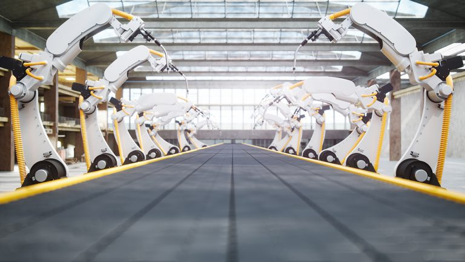

HOME
Applications of 5G Technology
Autonomous Vehicles
Autonomous vehicles are one of the most anticipated 5G applications. Vehicle technology is advancing rapidly to support the autonomous vehicle future.
Onboard computer systems are evolving with levels of compute power previously only seen in data centers.
5G networks will be an enormous enabler for autonomous vehicles, due to the dramatically reduced latency, as vehicles will be able to respond 10-100 times faster than over current cellular networks.
The ultimate goal is a vehicle-to-everything (V2X) communication network. This will enable vehicles to automatically respond to objects and changes around them almost instantaneously.
A vehicle must be able to send and receive messages in milliseconds in order to brake or shift directions in response to road signs, hazards and people crossing the street.
Augmented Reality (AR) and Virtual Reality (VR)
The low latency of 5G will make AR and VR applications both immersive and far more interactive. The arrival of 5G will push the storage, power consumption,
and processing power away from the PC and into the edge cloud.
This means VR users will only require a headset, which in turn opens VR up to be consumed anytime, anywhere. ... 5G will usher in the next era of immersive and cloud-connected experiences.
Applications in Industrial Automation
The key benefits of 5G in the industrial automation space are wireless flexibility, reduced costs and the viability of applications that are not possible with current wireless technology.
The roll-out of 5G wireless technology is expected to make an outsized impact on automation and control applications,
with its strong focus on machine-type communications and support for the Industrial Internet of Things (IIoT).
Unprecedented reliability and very low latencies add to the basic potential of Industrial 5G in manufacturing, even though the main technology building blocks and implementation challenges haven’t been fully resolved.

The 5G communications standard offers much higher bandwidth and ability for more data to be sent simultaneously than with 4G or earlier wireless standards.
According to Siemens, estimates start at 10 gigabits per second, 10 times more than 4G, along with substantially lower latency of greater reliability than current mobile networks and support for a higher number of connected devices.